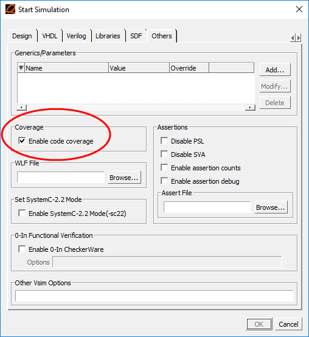

Once you specify
the coverage types for coverage, you must enable the simulation
for code collection.
Procedure
- CLI command: Use the -coverage
argument with the vsim command.
For example,
- GUI: check
box.
Figure 1. Enabling Code Coverage
in the Start Simulation Dialog